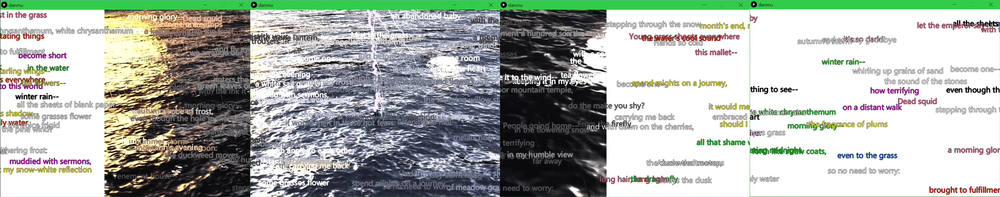
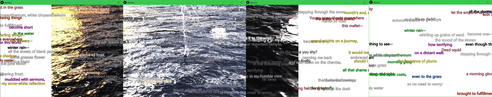
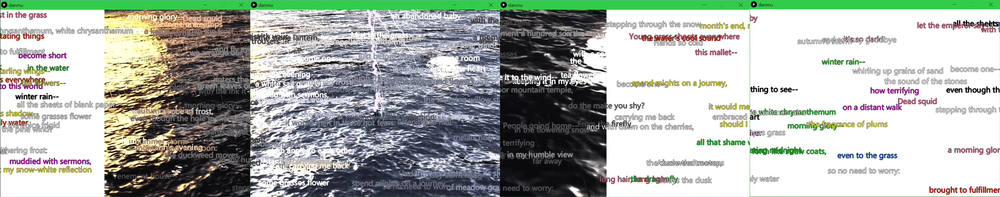
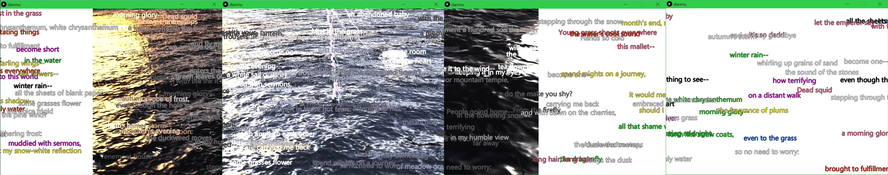

 


The 3D generated water flows with the barrage haiku. Barrage Haiku flows against the water.
Barrage Haiku is a quick project that superimposes flowing snippets of haiku with images of poetic tropes of haiku. Barrage subtitle is a format of communication that happens on the surface of streamed videos, which is popular on video platforms in east Asia. Textual notes and marks on images can also be traced back to writings and comments on scrolls, which are read and commented on along with the circulation of images.
Barrage subtitles are the immediate reaction from the video viewer coincided with the video image. The web users simply type and send the comment in the meantime of watching the video and the text would appear on top of it. In several ways, barrage subtitle on these websites works almost like a digital graffiti, as it constantly redirect the viewers’ attention and experience back and forth between the imagery and the textual content among layers of interfaces.
I connect 4 windows together to fabricate a continuous strip for the barrage haiku. A layer of haiku with varying density shifts the quality of the video---the image is "pixelated" at times so that it becomes poor. Barrage subtitles makes poor images not through circulating but through the number of times the video is streamed. Here, the barrage of texts turns into poetic, large pixel overlay.